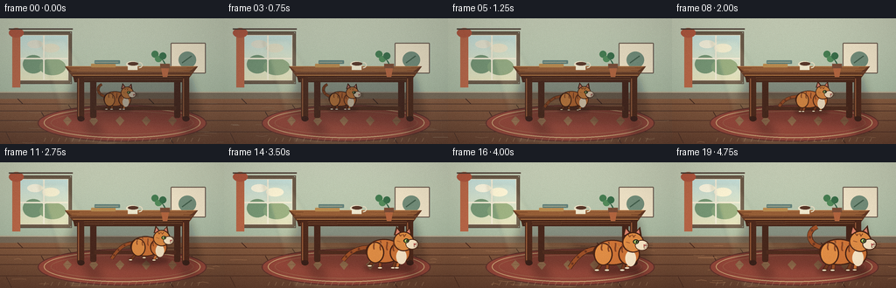
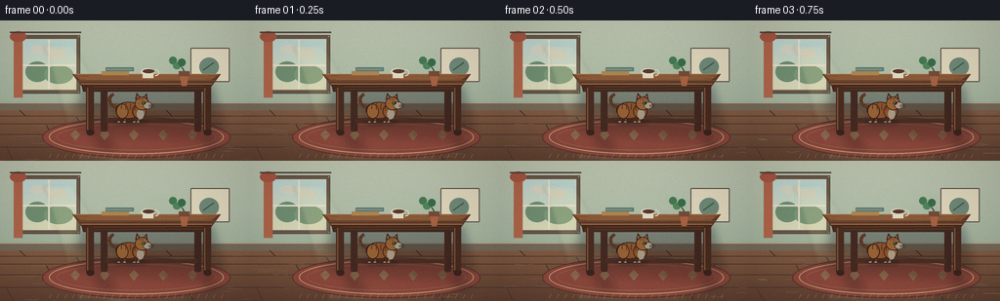

CODING AGENTS AS PIXEL WORLD MODELS
traex/DeepSeek-V4.1-Flash · dynamic_spatial_relationship_0017
点击播放 · 原生 RGB 像素
逐轮保存的候选
回放视频、检查图与代码变化。
每份候选均可单独播放。实际图片检查记录在下方工具轨迹中。
候选 01播放与检查图
点击播放 · 原生 RGB 像素

展开代码变化
--- 上一保存版本
+++ 本次保存版本
@@ -0,0 +1,492 @@
+"""Procedural RGB animation for: a cat moves from under a table to its front."""
+
+from __future__ import annotations
+
+import math
+from pathlib import Path
+
+import numpy as np
+from PIL import Image, ImageDraw, ImageEnhance, ImageFilter
+
+import artifact_io
+
+
+CASE_DIR = Path(__file__).resolve().parent
+WIDTH, HEIGHT = 256, 144
+FRAMES, FPS = 20, 4.0
+SS = 4
+W, H = WIDTH * SS, HEIGHT * SS
+
+
+def sc(value: float) -> int:
+ return int(round(value * SS))
+
+
+def box(x0: float, y0: float, x1: float, y1: float) -> tuple[int, int, int, int]:
+ return sc(x0), sc(y0), sc(x1), sc(y1)
+
+
+def points(values: list[tuple[float, float]]) -> list[tuple[int, int]]:
+ return [(sc(x), sc(y)) for x, y in values]
+
+
+def smoothstep(value: float) -> float:
+ value = max(0.0, min(1.0, value))
+ return value * value * (3.0 - 2.0 * value)
+
+
+def mix(a: float, b: float, t: float) -> float:
+ return a + (b - a) * t
+
+
+def bezier(
+ p0: tuple[float, float],
+ p1: tuple[float, float],
+ p2: tuple[float, float],
+ p3: tuple[float, float],
+ count: int = 28,
+) -> list[tuple[float, float]]:
+ result = []
+ for index in range(count):
+ t = index / (count - 1)
+ u = 1.0 - t
+ result.append(
+ (
+ u**3 * p0[0] + 3 * u * u * t * p1[0] + 3 * u * t * t * p2[0] + t**3 * p3[0],
+ u**3 * p0[1] + 3 * u * u * t * p1[1] + 3 * u * t * t * p2[1] + t**3 * p3[1],
+ )
+ )
+ return result
+
+
+def alpha_composite(base: Image.Image, layer: Image.Image, blur: float = 0.0) -> Image.Image:
+ if blur:
+ layer = layer.filter(ImageFilter.GaussianBlur(sc(blur)))
+ return Image.alpha_composite(base.convert("RGBA"), layer).convert("RGB")
+
+
+def create_background(rng: np.random.Generator) -> Image.Image:
+ yy = np.arange(H, dtype=np.float32)[:, None] / H
+ wall_top = np.array([198, 207, 187], dtype=np.float32)
+ wall_bottom = np.array([166, 184, 164], dtype=np.float32)
+ floor_top = np.array([139, 96, 67], dtype=np.float32)
+ floor_bottom = np.array([104, 68, 49], dtype=np.float32)
+
+ image = np.zeros((H, W, 3), dtype=np.float32)
+ floor_y = 0.635
+ wall_t = np.clip(yy / floor_y, 0.0, 1.0)
+ image[:] = wall_top[None, None, :] * (1 - wall_t[..., None]) + wall_bottom[None, None, :] * wall_t[..., None]
+ floor_t = np.clip((yy - floor_y) / (1.0 - floor_y), 0.0, 1.0)
+ floor_pixels = floor_top[None, None, :] * (1 - floor_t[..., None]) + floor_bottom[None, None, :] * floor_t[..., None]
+ mask = yy >= floor_y
+ image = np.where(mask[..., None], floor_pixels, image)
+
+ # Fine material grain keeps the flat vector scene from feeling synthetic.
+ noise = rng.normal(0.0, 1.9, (H, W, 1))
+ image += noise
+ image = np.clip(image, 0, 255).astype(np.uint8)
+ return Image.fromarray(image, "RGB").convert("RGBA")
+
+
+def draw_window(scene: Image.Image) -> None:
+ draw = ImageDraw.Draw(scene, "RGBA")
+ x0, y0, x1, y1 = 22, 19, 78, 71
+ draw.rounded_rectangle(box(x0 - 3, y0 - 3, x1 + 3, y1 + 3), radius=sc(2), fill=(111, 93, 73, 255))
+ draw.rectangle(box(x0, y0, x1, y1), fill=(177, 210, 211, 255))
+ for i in range(sc(y0), sc(y1)):
+ t = (i - sc(y0)) / max(1, sc(y1) - sc(y0))
+ color = (
+ int(mix(194, 225, t)),
+ int(mix(221, 224, t)),
+ int(mix(219, 190, t)),
+ 255,
+ )
+ draw.line((sc(x0), i, sc(x1), i), fill=color)
+
+ # A distant garden silhouette and soft clouds.
+ draw.ellipse(box(26, 42, 50, 63), fill=(123, 153, 118, 165))
+ draw.ellipse(box(45, 46, 75, 65), fill=(137, 165, 124, 145))
+ draw.ellipse(box(31, 25, 49, 34), fill=(246, 243, 224, 90))
+ draw.ellipse(box(48, 29, 68, 39), fill=(246, 243, 224, 75))
+
+ draw.line((sc(50), sc(y0), sc(50), sc(y1)), fill=(239, 234, 216, 255), width=sc(1.7))
+ draw.line((sc(x0), sc(46), sc(x1), sc(46)), fill=(239, 234, 216, 255), width=sc(1.7))
+ draw.rectangle(box(x0 - 4, y0 - 4, x1 + 4, y1 + 4), outline=(95, 77, 62, 255), width=sc(1))
+ draw.rectangle(box(x0, y0, x1, y1), outline=(225, 219, 198, 235), width=sc(0.8))
+
+ # Curtain and a little rod.
+ draw.rectangle(box(14, 13, 23, 79), fill=(188, 107, 74, 210))
+ draw.ellipse(box(10, 11, 27, 22), fill=(178, 91, 65, 230))
+ draw.line((sc(10), sc(12), sc(83), sc(12)), fill=(83, 66, 54, 255), width=sc(1.4))
+
+
+def draw_wall_details(scene: Image.Image) -> None:
+ draw = ImageDraw.Draw(scene, "RGBA")
+ # Baseboard and a slim, quiet wall frame.
+ draw.rectangle(box(0, 84, 256, 92), fill=(126, 111, 91, 255))
+ draw.line((sc(0), sc(84.5), sc(256), sc(84.5)), fill=(219, 208, 183, 220), width=sc(0.8))
+ draw.rounded_rectangle(box(195, 28, 235, 63), radius=sc(1), fill=(234, 224, 200, 220), outline=(100, 80, 66, 255), width=sc(1))
+ draw.ellipse(box(204, 38, 224, 57), fill=(119, 143, 122, 215))
+ draw.line((sc(208), sc(51), sc(219), sc(43)), fill=(73, 98, 78, 225), width=sc(1.5))
+
+ # Quiet sunlight falling from the window onto the wall and floor.
+ ray = Image.new("RGBA", (W, H), (0, 0, 0, 0))
+ ray_draw = ImageDraw.Draw(ray, "RGBA")
+ ray_draw.polygon(points([(45, 25), (74, 25), (145, 143), (80, 143)]), fill=(255, 242, 192, 26))
+ ray_draw.polygon(points([(64, 26), (74, 26), (137, 143), (112, 143)]), fill=(255, 248, 210, 18))
+ scene.alpha_composite(ray.filter(ImageFilter.GaussianBlur(sc(2.0))))
+
+
+def draw_floor(scene: Image.Image, rng: np.random.Generator) -> None:
+ draw = ImageDraw.Draw(scene, "RGBA")
+ floor_top = 91
+ for y in (98, 106, 117, 130):
+ draw.line((sc(0), sc(y), sc(256), sc(y)), fill=(83, 52, 38, 95), width=sc(0.7))
+ seams = [
+ (20, 92, 26, 98), (78, 99, 83, 106), (170, 92, 176, 98),
+ (219, 107, 224, 117), (47, 107, 53, 117), (122, 118, 130, 130),
+ (190, 131, 198, 143), (7, 131, 13, 143),
+ ]
+ for x0, y0, x1, y1 in seams:
+ draw.line((sc(x0), sc(y0), sc(x1), sc(y1)), fill=(74, 46, 34, 95), width=sc(0.8))
+
+ # Sparse wood grain.
+ for _ in range(22):
+ y = rng.uniform(floor_top + 2, 143)
+ x = rng.uniform(2, 248)
+ length = rng.uniform(7, 22)
+ bend = rng.uniform(-1.2, 1.2)
+ draw.line((sc(x), sc(y), sc(x + length * 0.5), sc(y + bend), sc(x + length), sc(y)), fill=(194, 139, 95, 34), width=sc(0.45))
+
+ # Floor light pool.
+ light = Image.new("RGBA", (W, H), (0, 0, 0, 0))
+ light_draw = ImageDraw.Draw(light, "RGBA")
+ light_draw.polygon(points([(66, 89), (139, 89), (198, 143), (102, 143)]), fill=(255, 221, 152, 40))
+ scene.alpha_composite(light.filter(ImageFilter.GaussianBlur(sc(5))))
+
+
+def draw_rug(scene: Image.Image) -> None:
+ layer = Image.new("RGBA", (W, H), (0, 0, 0, 0))
+ draw = ImageDraw.Draw(layer, "RGBA")
+ draw.ellipse(box(43, 99, 236, 141), fill=(151, 75, 60, 242), outline=(101, 55, 47, 255), width=sc(1.2))
+ draw.ellipse(box(50, 102, 229, 137), outline=(218, 183, 132, 220), width=sc(1.0))
+ draw.ellipse(box(58, 106, 221, 133), outline=(181, 126, 92, 170), width=sc(0.6))
+ for x in (77, 107, 137, 167, 197):
+ draw.polygon(points([(x, 112), (x + 5, 117), (x, 123), (x - 5, 117)]), fill=(207, 160, 111, 72))
+ # Fringe.
+ for x in range(52, 230, 8):
+ draw.line((sc(x), sc(137), sc(x - 2), sc(141)), fill=(220, 190, 145, 150), width=sc(0.6))
+ scene.alpha_composite(layer)
+
+
+def draw_table_shadow(scene: Image.Image) -> None:
+ layer = Image.new("RGBA", (W, H), (0, 0, 0, 0))
+ draw = ImageDraw.Draw(layer, "RGBA")
+ draw.polygon(points([(83, 66), (218, 66), (230, 113), (203, 121), (93, 117), (73, 110)]), fill=(45, 28, 22, 72))
+ draw.polygon(points([(91, 112), (104, 112), (120, 132), (103, 132)]), fill=(42, 26, 20, 75))
+ draw.polygon(points([(202, 112), (214, 112), (226, 132), (211, 132)]), fill=(42, 26, 20, 75))
+ scene.alpha_composite(layer.filter(ImageFilter.GaussianBlur(sc(4.5))))
+
+
+def draw_table(scene: Image.Image) -> None:
+ draw = ImageDraw.Draw(scene, "RGBA")
+
+ # Back legs and stretcher are slightly muted by distance.
+ draw.rounded_rectangle(box(103, 65, 110, 114), radius=sc(2), fill=(75, 44, 31, 255))
+ draw.rounded_rectangle(box(199, 65, 206, 114), radius=sc(2), fill=(73, 42, 30, 255))
+ draw.rectangle(box(108, 101, 201, 105), fill=(82, 48, 33, 255))
+
+ # Tabletop: a narrow perspective surface plus a thick front edge.
+ draw.polygon(points([(74, 55), (226, 55), (217, 67), (83, 67)]), fill=(102, 61, 39, 255))
+ draw.polygon(points([(75, 55), (224, 55), (216, 61), (82, 61)]), fill=(139, 87, 51, 255))
+ draw.polygon(points([(83, 65), (217, 65), (215, 73), (85, 73)]), fill=(76, 43, 29, 255))
+ draw.line((sc(83), sc(65), sc(217), sc(65)), fill=(180, 121, 70, 190), width=sc(0.9))
+ draw.line((sc(76), sc(55), sc(224), sc(55)), fill=(193, 133, 81, 155), width=sc(0.8))
+
+ # Wood grain on the table surface.
+ for y, x0, x1, alpha in [
+ (57.0, 91, 213, 75), (58.7, 82, 220, 55), (60.2, 88, 209, 60),
+ (62.0, 80, 220, 45), (68.0, 89, 211, 60), (70.5, 87, 214, 50),
+ ]:
+ draw.line((sc(x0), sc(y), sc(x1), sc(y - 0.7)), fill=(209, 145, 88, alpha), width=sc(0.45))
+
+ # Front legs catch a little window light.
+ for x in (88, 208):
+ draw.rounded_rectangle(box(x, 67, x + 8, 116), radius=sc(2.2), fill=(81, 46, 31, 255))
+ draw.line((sc(x + 1.6), sc(69), sc(x + 1.6), sc(112)), fill=(167, 103, 64, 165), width=sc(1.0))
+ draw.ellipse(box(x + 0.5, 112, x + 8.5, 118), fill=(63, 38, 29, 255))
+
+ # Tabletop still life: books, mug, and a small potted plant.
+ draw.rounded_rectangle(box(104, 52, 132, 56), radius=sc(0.8), fill=(183, 138, 80, 255))
+ draw.rounded_rectangle(box(108, 48, 137, 52), radius=sc(0.8), fill=(100, 128, 120, 255))
+ draw.line((sc(109), sc(50), sc(135), sc(50)), fill=(210, 191, 148, 180), width=sc(0.5))
+
+ draw.ellipse(box(144, 49, 158, 56), fill=(228, 220, 196, 255))
+ draw.rectangle(box(146, 51, 157, 59), fill=(231, 225, 203, 255))
+ draw.arc(box(155, 50, 163, 57), 265, 95, fill=(220, 212, 190, 255), width=sc(1.2))
+ draw.ellipse(box(146, 50, 158, 54), fill=(93, 61, 45, 255))
+
+ draw.polygon(points([(184, 56), (193, 56), (191, 67), (186, 67)]), fill=(178, 103, 65, 255))
+ draw.rectangle(box(183, 52, 194, 57), fill=(124, 79, 56, 255))
+ stem_points = bezier((188.5, 52), (185, 44), (180, 46), (178, 40))
+ draw.line(points(stem_points), fill=(54, 95, 66, 255), width=sc(1.2), joint="curve")
+ draw.ellipse(box(173, 37, 181, 45), fill=(74, 126, 82, 255))
+ draw.ellipse(box(177, 43, 185, 50), fill=(87, 139, 91, 255))
+ draw.ellipse(box(182, 39, 190, 47), fill=(62, 111, 74, 255))
+
+
+def cat_limb(
+ draw: ImageDraw.ImageDraw,
+ origin: tuple[float, float],
+ scale: float,
+ hip: tuple[float, float],
+ foot: tuple[float, float],
+ color: tuple[int, int, int, int],
+ outline: tuple[int, int, int, int],
+ lift: float = 0.0,
+) -> tuple[float, float]:
+ ox, oy = origin
+ hx, hy = hip
+ fx, fy = foot
+ knee = ((hx + fx) * 0.5 + 1.7, (hy + fy) * 0.5 - 1.0 - lift * 0.55)
+ paw = (fx, fy - lift)
+ path = [
+ (sc(ox + hx * scale), sc(oy + hy * scale)),
+ (sc(ox + knee[0] * scale), sc(oy + knee[1] * scale)),
+ (sc(ox + paw[0] * scale), sc(oy + paw[1] * scale)),
+ ]
+ width = max(sc(2.5 * scale), sc(2))
+ draw.line(path, fill=outline, width=width + sc(1.2), joint="curve")
+ draw.line(path, fill=color, width=width, joint="curve")
+ return paw
+
+
+def draw_cat(
+ scene: Image.Image,
+ ground_x: float,
+ ground_y: float,
+ scale: float,
+ phase: float,
+ run_amount: float,
+ under_amount: float,
+) -> None:
+ # Contact shadow.
+ shadow = Image.new("RGBA", (W, H), (0, 0, 0, 0))
+ shadow_draw = ImageDraw.Draw(shadow, "RGBA")
+ shadow_draw.ellipse(
+ box(ground_x - 23 * scale, ground_y - 3.5 * scale, ground_x + 29 * scale, ground_y + 4.5 * scale),
+ fill=(45, 27, 20, int(100 - 20 * under_amount)),
+ )
+ scene.alpha_composite(shadow.filter(ImageFilter.GaussianBlur(sc(2.5 * scale))))
+
+ layer = Image.new("RGBA", (W, H), (0, 0, 0, 0))
+ draw = ImageDraw.Draw(layer, "RGBA")
+ ox, oy = ground_x, ground_y
+ outline = (78, 42, 26, 255)
+ far = (157, 83, 43, 255)
+ orange = (207, 119, 58, 255)
+ light_orange = (224, 143, 72, 255)
+ cream = (244, 227, 199, 255)
+
+ def pt(x: float, y: float) -> tuple[int, int]:
+ return sc(ox + x * scale), sc(oy + y * scale)
+
+ def bb(x0: float, y0: float, x1: float, y1: float) -> tuple[int, int, int, int]:
+ return sc(ox + x0 * scale), sc(oy + y0 * scale), sc(ox + x1 * scale), sc(oy + y1 * scale)
+
+ # Tail is drawn first and curls higher when the cat is resting.
+ tail_sway = math.sin(phase * 0.72) * (1.2 + 2.2 * run_amount)
+ if run_amount < 0.22:
+ tail = bezier((-15, -22), (-31, -23), (-35, -38), (-24 + tail_sway, -43))
+ else:
+ tail = bezier((-16, -22), (-32, -22), (-40, -12 + tail_sway), (-45, -5 + tail_sway))
+ tail_pts = [pt(x, y) for x, y in tail]
+ draw.line(tail_pts, fill=outline, width=max(sc(5.0 * scale), sc(3)), joint="curve")
+ draw.line(tail_pts, fill=far, width=max(sc(3.8 * scale), sc(2)), joint="curve")
+ for index in (8, 15, 22):
+ if index < len(tail_pts):
+ x, y = tail_pts[index]
+ draw.ellipse((x - sc(1.2 * scale), y - sc(1.2 * scale), x + sc(1.2 * scale), y + sc(1.2 * scale)), fill=(113, 58, 34, 230))
+
+ # Four legs, with a restrained alternating trot.
+ stride = run_amount * 5.4
+ feet = []
+ leg_specs = [
+ ((-10, -13), (-16 + stride * math.sin(phase), 0.0), (118, 63, 36, 255), 0.0, 0.55),
+ ((11, -13), (8 - stride * math.sin(phase), 0.0), (122, 65, 36, 255), math.pi, 0.48),
+ ((-8, -13), (-7 - stride * math.sin(phase + 0.15), 0.0), far, math.pi, 0.44),
+ ((13, -13), (14 + stride * math.sin(phase + 0.15), 0.0), orange, 0.0, 0.38),
+ ]
+ for hip, foot, color, offset, phase_scale in leg_specs:
+ wave = math.sin(phase * phase_scale + offset)
+ lift = max(0.0, wave) * 3.2 * run_amount
+ adjusted_foot = (foot[0], foot[1])
+ paw = cat_limb(draw, (ox, oy), scale, hip, adjusted_foot, color, outline, lift)
+ feet.append(paw)
+ draw.ellipse(bb(paw[0] - 2.7, paw[1] - 1.3, paw[0] + 2.7, paw[1] + 1.2), fill=cream, outline=outline, width=max(sc(0.55 * scale), 1))
+
+ # Main body masses.
+ draw.ellipse(bb(-21, -31, 19, -5), fill=outline)
+ draw.ellipse(bb(-19.7, -29.8, 17.7, -6.2), fill=orange)
+ draw.ellipse(bb(-20, -28, -1, -5), fill=outline)
+ draw.ellipse(bb(-18.7, -26.8, -2.3, -6.1), fill=light_orange)
+ draw.ellipse(bb(5, -28, 27, -5), fill=outline)
+ draw.ellipse(bb(6.3, -26.8, 25.7, -6.2), fill=orange)
+ # White bib.
+ draw.ellipse(bb(12, -20, 23, -4), fill=cream)
+
+ # Ears, head, and muzzle.
+ left_ear = [pt(9.5, -35), pt(12.2, -45), pt(19.0, -36.5)]
+ right_ear = [pt(20.0, -36.5), pt(27.2, -44.5), pt(29.0, -33.5)]
+ draw.polygon(left_ear, fill=outline)
+ draw.polygon(right_ear, fill=outline)
+ draw.polygon([pt(11.2, -36.2), pt(12.8, -42.2), pt(17.3, -36.3)], fill=(218, 133, 112, 255))
+ draw.polygon([pt(21.5, -36.4), pt(26.0, -41.8), pt(27.3, -34.8)], fill=(218, 133, 112, 255))
+ draw.ellipse(bb(9, -39, 31, -18), fill=outline)
+ draw.ellipse(bb(10.2, -37.8, 29.8, -19.2), fill=light_orange)
+ draw.ellipse(bb(22, -31, 36, -20), fill=outline)
+ draw.ellipse(bb(22.8, -30.2, 35.0, -20.8), fill=cream)
+
+ # A body mask gives the tabby stripes a clean fur edge.
+ body_mask = Image.new("L", (W, H), 0)
+ mask_draw = ImageDraw.Draw(body_mask)
+ mask_draw.ellipse(bb(-19.7, -29.8, 17.7, -6.2), fill=255)
+ mask_draw.ellipse(bb(-18.7, -26.8, -2.3, -6.1), fill=255)
+ mask_draw.ellipse(bb(6.3, -26.8, 25.7, -6.2), fill=255)
+ mask_draw.ellipse(bb(10.2, -37.8, 29.8, -19.2), fill=255)
+
+ stripes = Image.new("RGBA", (W, H), (0, 0, 0, 0))
+ stripe_draw = ImageDraw.Draw(stripes, "RGBA")
+ for x, y0, y1 in [(-12, -28, -20), (-5, -29, -19), (2, -28, -19), (9, -27, -18)]:
+ curve = bezier((x, y0), (x + 1.0, y0 + 3), (x - 1.5, y1 - 3), (x + 0.5, y1))
+ stripe_draw.line([pt(px, py) for px, py in curve], fill=(124, 63, 35, 210), width=max(sc(1.55 * scale), 1), joint="curve")
+ # Forehead M and cheek stripes.
+ stripe_draw.line([pt(14.5, -37), pt(16.5, -34), pt(18.2, -36)], fill=(125, 64, 35, 220), width=max(sc(0.9 * scale), 1))
+ stripe_draw.line([pt(19.2, -36.5), pt(20.5, -33.5), pt(22.5, -36.2)], fill=(125, 64, 35, 220), width=max(sc(0.9 * scale), 1))
+ stripe_draw.line([pt(13.0, -29), pt(16.5, -28)], fill=(131, 70, 40, 185), width=max(sc(0.8 * scale), 1))
+ stripe_alpha = stripes.getchannel("A").point(lambda value: value * body_mask.getpixel((0, 0)) // 255)
+ # Multiply the stripe alpha by the body mask directly.
+ stripe_alpha = Image.fromarray(
+ (np.asarray(stripes.getchannel("A"), dtype=np.uint16) * np.asarray(body_mask, dtype=np.uint16) // 255).astype(np.uint8)
+ )
+ stripes.putalpha(stripe_alpha)
+ layer.alpha_composite(stripes)
+
+ # Face.
+ draw.ellipse(bb(19.8, -31.5, 25.8, -26.8), fill=(43, 43, 31, 255))
+ draw.ellipse(bb(21.0, -30.5, 24.5, -27.5), fill=(170, 194, 92, 255))
+ draw.ellipse(bb(22.7, -30.1, 24.0, -28.0), fill=(30, 36, 24, 255))
+ draw.ellipse(bb(22.0, -30.2, 22.8, -29.4), fill=(245, 245, 218, 240))
+ draw.polygon([pt(30.7, -26.6), pt(34.0, -25.6), pt(30.8, -23.9)], fill=(183, 92, 83, 255))
+ draw.line((pt(31.2, -24.4), pt(31.0, -22.7), pt(32.4, -22.8)), fill=(100, 58, 42, 220), width=max(sc(0.55 * scale), 1))
+ for y, dy in [(-27.0, -1.4), (-25.5, 0.0), (-24.0, 1.1)]:
+ draw.line((pt(33.0, y), pt(40.0, y + dy)), fill=(82, 58, 43, 185), width=max(sc(0.35 * scale), 1))
+ draw.line((pt(32.8, y + 0.4), pt(39.0, y + 2.0 + dy)), fill=(82, 58, 43, 155), width=max(sc(0.3 * scale), 1))
+
+ # Short fur highlights along the back and haunch.
+ for x0, y0, x1, y1 in [(-14, -27, -10, -25), (-6, -28, -3, -25), (3, -26, 6, -23), (13, -23, 16, -21)]:
+ draw.line((pt(x0, y0), pt(x1, y1)), fill=(248, 189, 111, 145), width=max(sc(0.45 * scale), 1))
+
+ if under_amount > 0:
+ brightness = 1.0 - 0.24 * under_amount
+ layer = ImageEnhance.Brightness(layer).enhance(brightness)
+ blue_tint = Image.new("RGBA", (W, H), (60, 75, 82, int(24 * under_amount)))
+ layer = Image.alpha_composite(layer, blue_tint)
+
+ scene.alpha_composite(layer)
+
+
+def cat_animation(frame: int) -> tuple[float, float, float, float, float, float]:
+ if frame <= 3:
+ x = 132.0 + frame * 0.45
+ y = 104.0
+ scale = 0.66
+ run = 0.04
+ phase = frame * 0.33
+ under = 1.0
+ elif frame <= 8:
+ u = smoothstep((frame - 3) / 5)
+ x = mix(133.4, 157.0, u)
+ y = mix(104.0, 106.5, u)
+ scale = mix(0.66, 0.77, u)
+ run = mix(0.05, 0.72, u)
+ phase = frame * 0.85
+ under = 1.0 - 0.72 * u
+ elif frame <= 16:
+ u = smoothstep((frame - 8) / 8)
+ x = mix(157.0, 189.0, u)
+ y = mix(106.5, 123.5, u)
+ scale = mix(0.77, 1.12, u)
+ run = 1.0
+ phase = 7.3 + (frame - 8) * 1.42
+ under = 0.28 * (1.0 - u)
+ else:
+ u = smoothstep((frame - 16) / 3)
+ x = mix(189.0, 192.0, u)
+ y = 123.5
+ scale = mix(1.12, 1.16, u)
+ run = mix(0.82, 0.08, u)
+ phase = 18.7 + (frame - 16) * 0.36
+ under = 0.0
+ return x, y, scale, phase, run, under
+
+
+def add_foreground_grade(image: Image.Image, frame: int, rng: np.random.Generator) -> Image.Image:
+ array = np.asarray(image, dtype=np.float32)
+ yy, xx = np.mgrid[0:HEIGHT, 0:WIDTH]
+ nx = (xx - WIDTH * 0.5) / (WIDTH * 0.5)
+ ny = (yy - HEIGHT * 0.5) / (HEIGHT * 0.5)
+ vignette = 1.0 - 0.13 * np.clip(nx * nx * 0.62 + ny * ny * 0.45, 0.0, 1.0)
+ array *= vignette[..., None]
+
+ # Warm the highlights, keep the shadows cool, and restore a little contrast.
+ luminance = array.mean(axis=2, keepdims=True)
+ array = (array - 128.0) * 1.055 + 128.0
+ array += np.where(luminance > 145, np.array([3.0, 1.0, -2.0]), np.array([-1.0, 0.0, 2.0]))
+ grain = rng.normal(0.0, 1.15, (HEIGHT, WIDTH, 1))
+ array += grain
+ return Image.fromarray(np.clip(array, 0, 255).astype(np.uint8), "RGB")
+
+
+def render_frame(frame: int, rng: np.random.Generator) -> np.ndarray:
+ scene = create_background(rng)
+ draw_window(scene)
+ draw_wall_details(scene)
+ draw_floor(scene, rng)
+ draw_rug(scene)
+ draw_table_shadow(scene)
+ draw_table(scene)
+
+ x, y, scale, phase, run, under = cat_animation(frame)
+ draw_cat(scene, x, y, scale, phase, run, under)
+
+ # Ambient occlusion under the tabletop, strongest at the back.
+ if frame < 10:
+ shade = Image.new("RGBA", (W, H), (0, 0, 0, 0))
+ shade_draw = ImageDraw.Draw(shade, "RGBA")
+ alpha = int(30 * (1.0 - frame / 12.0))
+ shade_draw.rectangle(box(84, 69, 216, 109), fill=(39, 36, 32, max(0, alpha)))
+ scene.alpha_composite(shade.filter(ImageFilter.GaussianBlur(sc(3.0))))
+
+ low = scene.convert("RGB").resize((WIDTH, HEIGHT), Image.Resampling.LANCZOS)
+ return np.asarray(add_foreground_grade(low, frame, rng), dtype=np.uint8)
+
+
+def main() -> None:
+ rng = np.random.default_rng(17017)
+ frames = np.stack([render_frame(index, rng) for index in range(FRAMES)])
+ artifact_io.save(frames, CASE_DIR)
+
+ # A compact review copy is useful when the HTML player is not available.
+ try:
+ import imageio.v2 as imageio
+
+ imageio.mimsave(CASE_DIR / "preview.mp4", list(frames), fps=FPS, macro_block_size=1)
+ except Exception:
+ pass
+
+ print(f"saved {frames.shape} uint8 frames to {CASE_DIR}")
+
+
+if __name__ == "__main__":
+ main()
候选 02播放与检查图
点击播放 · 原生 RGB 像素


展开代码变化
--- 上一保存版本
+++ 本次保存版本
@@ -85,7 +85,7 @@
noise = rng.normal(0.0, 1.9, (H, W, 1))
image += noise
image = np.clip(image, 0, 255).astype(np.uint8)
- return Image.fromarray(image, "RGB").convert("RGBA")
+ return Image.fromarray(image).convert("RGBA")
def draw_window(scene: Image.Image) -> None:
@@ -364,8 +364,7 @@
stripe_draw.line([pt(14.5, -37), pt(16.5, -34), pt(18.2, -36)], fill=(125, 64, 35, 220), width=max(sc(0.9 * scale), 1))
stripe_draw.line([pt(19.2, -36.5), pt(20.5, -33.5), pt(22.5, -36.2)], fill=(125, 64, 35, 220), width=max(sc(0.9 * scale), 1))
stripe_draw.line([pt(13.0, -29), pt(16.5, -28)], fill=(131, 70, 40, 185), width=max(sc(0.8 * scale), 1))
- stripe_alpha = stripes.getchannel("A").point(lambda value: value * body_mask.getpixel((0, 0)) // 255)
- # Multiply the stripe alpha by the body mask directly.
+ # Clip the tabby marks to the cat's body and head silhouettes.
stripe_alpha = Image.fromarray(
(np.asarray(stripes.getchannel("A"), dtype=np.uint16) * np.asarray(body_mask, dtype=np.uint16) // 255).astype(np.uint8)
)
@@ -445,7 +444,7 @@
array += np.where(luminance > 145, np.array([3.0, 1.0, -2.0]), np.array([-1.0, 0.0, 2.0]))
grain = rng.normal(0.0, 1.15, (HEIGHT, WIDTH, 1))
array += grain
- return Image.fromarray(np.clip(array, 0, 255).astype(np.uint8), "RGB")
+ return Image.fromarray(np.clip(array, 0, 255).astype(np.uint8))
def render_frame(frame: int, rng: np.random.Generator) -> np.ndarray:
可观测工具轨迹
实际执行的命令与返回图片。
命令 1exit 0
/bin/bash -c "pwd && rg --files -g '"'!node_modules'"' -g '"'!venv'"' | sed -n '1,200p'"
命令 2exit 0
/bin/bash -c "sed -n '1,240p' prompt.txt"
命令 3exit 0
/bin/bash -c "sed -n '1,260p' GENERATION_RULES.md"
命令 4exit 0
/bin/bash -c "sed -n '1,260p' task_spec.json"
命令 5exit 0
/bin/bash -c "find . -maxdepth 2 -type f -printf '%p\\n' | sort | sed -n '1,240p'; printf '\\nDIRS\\n'; find . -maxdepth 2 -type d -printf '%p\\n' | sort | sed -n '1,160p'"
命令 6exit 0
/bin/bash -c "sed -n '1,300p' artifact_io.py"
命令 7exit 0
/bin/bash -c "sed -n '1,260p' player_template.html"
命令 8exit 0
/bin/bash -c "python - <<'PY' mods=['numpy','PIL','imageio','cv2','matplotlib','scipy','skimage','torch'] for m in mods: try: x=__import__(m); print(m, getattr(x,'__version__','ok')) except Exception as e: print(m,'NO',type(e).__name__,e) PY command -v ffmpeg || true ffmpeg -version 2>/dev/null | sed -n '1,3p' || true"
命令 9exit 0
/bin/bash -c 'MPLCONFIGDIR=.tmp/mpl python generate.py'
命令 10exit 0
/bin/bash -c 'command -v chafa || true; command -v viu || true; command -v jp2 || true; command -v img2txt || true; command -v ffprobe || true'
命令 11exit 0
/bin/bash -c "python - <<'PY'
from PIL import Image
import numpy as np
im=np.asarray(Image.open('frames/00.png'))
print('frame', im.shape, im.dtype, 'minmax', im.min(), im.max(), 'mean', im.mean(axis=(0,1)))
print('unique colors', len(np.unique(im.reshape(-1,3),axis=0)))
PY"命令 12exit 0
/bin/bash -c "python - <<'PY'
from PIL import Image
import numpy as np
for fi in [0,3,6,9,12,15,18,19]:
im=np.asarray(Image.open(f'frames/{fi:02d}.png')).astype(float)
# classify by rough RGB thresholds
r,g,b=im[:,:,0],im[:,:,1],im[:,:,2]
masks={
'C':(r>150)&(r>g*1.25)&(g>b*1.05)&(r-b>70),
'T':(r<140)&(r>45)&(g<95)&(b<70)&(r>g*1.2),
'R':(r>110)&(r<190)&(g<105)&(b<85)&(r>g*1.3),
'W':(b>150)&(g>160)&(r>130),
'F':(r>70)&(g<110)&(b<90),
}
print('\\nFRAME',fi)
# block average and map priority
bs=4
out=[]
for y in range(0,144,bs):
row=''
for x in range(0,256,bs):
c={k:int(m[y:y+bs,x:x+bs].sum()) for k,m in masks.items()}
best=max(c,key=c.get)
row += best if c[best]>=3 else ('#' if im[y:y+bs,x:x+bs].mean()<75 else '.')
out.append(row)
print('\\n'.join(out))
PY"命令 13exit 0
/bin/bash -c "python - <<'PY'
from PIL import Image
import numpy as np
for fi in [0,5,10,15,19]:
im=np.asarray(Image.open(f'frames/{fi:02d}.png')).astype(float)
r,g,b=im[:,:,0],im[:,:,1],im[:,:,2]
m=(r>170)&(r>g*1.22)&(r-b>60)
ys,xs=np.where(m)
print(fi, 'orange bbox', (xs.min(),ys.min(),xs.max(),ys.max()), 'n',len(xs))
PY"命令 14exit 0
/bin/bash -c "python - <<'PY'
from PIL import Image
im=Image.open('inspection.png')
# nearest neighbor enlarge for terminal-independent visual checks
im.resize((im.width*2,im.height*2), Image.Resampling.NEAREST).save('.tmp/inspection_2x.png')
print(im.size)
PY
ls -lh frames pixels.npz index.html preview.mp4 inspection.png transition_check.png"命令 15exit 0
/bin/bash -c "MPLCONFIGDIR=.tmp/mpl python generate.py && python - <<'PY'
from pathlib import Path
import json
import numpy as np
from PIL import Image
spec=json.loads(Path('task_spec.json').read_text())
pixels=np.load('pixels.npz')['pixels']
frames=sorted(Path('frames').glob('*.png'))
checks={
'pixel_tensor': list(pixels.shape),
'frames': len(frames),
'png_size': Image.open(frames[0]).size,
'index_html': Path('index.html').stat().st_size,
'preview_mp4': Path('preview.mp4').stat().st_size,
'unique_frames': len({Path(p).read_bytes() for p in frames}),
}
print(checks)
assert pixels.shape == (spec['height'], spec['width'], spec['frames'])
assert len(frames) == spec['frames']
assert Image.open(frames[0]).size == (spec['width'], spec['height'])
assert checks['unique_frames'] >= 18
print('validation: ok')
PY"命令 16exit 0
/bin/bash -c 'git status --short 2>/dev/null || true; python -m py_compile generate.py artifact_io.py; ffprobe -v error -show_entries stream=codec_name,width,height,r_frame_rate,nb_frames,duration -of default=noprint_wrappers=1 preview.mp4 2>/dev/null || true'
命令 17exit 0
/bin/bash -c "python - <<'PY'
import imageio.v2 as iio
try:
r=iio.get_reader('preview.mp4')
print('preview metadata', r.get_meta_data())
n=sum(1 for _ in r)
print('decoded frames', n)
r.close()
except Exception as e:
print('preview decode failed:', type(e).__name__, e)
PY"保存候选 2 份；完成命令 17 次；可验证图片返回 0 张。原始 API 响应与完整日志保留在本地。